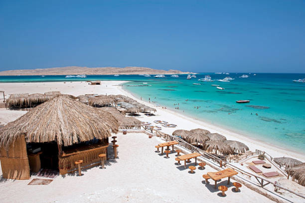
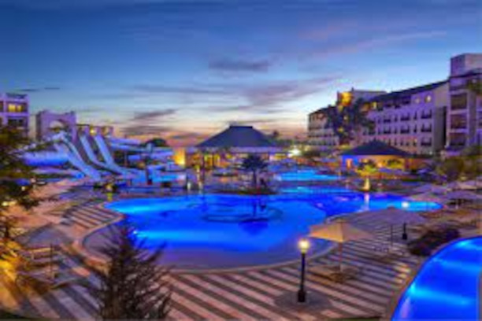
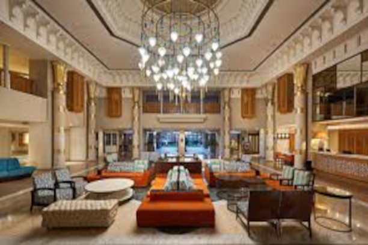
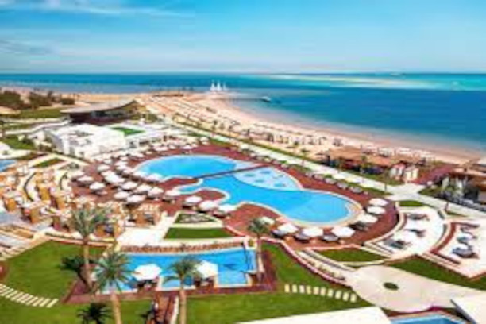

Hurghada é uma cidade turística no Egito, localizada na costa do Mar
Vermelho. É famosa pelas suas praias de areia branca, os seus recifes de
coral e as suas atividades aquáticas, como mergulho, snorkeling e windsurf.
Hurghada também tem uma vida noturna animada, com vários bares,
restaurantes e discotecas.
Hurghada é uma cidade turística no Egito,
localizada na costa do Mar Vermelho. É famosa
pelas suas praias de areia branca, os seus recifes
de coral e as suas atividades aquáticas, como
mergulho, snorkeling e windsurf. Hurghada
também tem uma vida noturna animada, com vários
bares, restaurantes e discotecas.
Valor por pessoa por 7 dias: R$2.165
 Faça sua reserva aqui
Faça sua reserva aqui